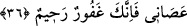

36. “Rabbim, onlar (putlar) insanlardan birçoğunun sapmasına sebep oldular.
Şimdi kim bana uyarsa o bendendir. Kim de bana karşı gelirse, artık sen gerçekten
çok bağışlayan, pek esirgeyensin.”
“Rabbim, onlar” yâni putlar “insanlardan birçoğunun sapmasına sebep oldular.”
Bu sebeple ben de Senden beni ve oğullarımı bunların şaşırtmasından korumanı istedim,
onların saptırmasından sana sığındım.
İbrâhim (a.s.), ‘Birçok insan bunlar yüzünden saptı.’ diyor. Dolayısıyla putlar,
insanların sapmasına sebeb olduğu için her ne kadar gerçek mânâda bir amelleri yoksa
da saptırma fiili onlara isnâd edilmiştir. Bu tıpkı “Dünyâ hayâtı onları aldattı.” (el-
En’âm, 6/70) âyeti gibidir. ‘Onun yüzünden aldandılar’ demektir.
Bâzıları ise ‘saptırma fiilinin putlardan sâdır olduğunu, çünkü şeytanların onların
içine girerek konuştuğunu’ söylemiştir. Nitekim anlatıldığına göre bir şeytan Ebû
Cehil’in putunun içine girmiş ve put hareket etmeye, Hz. Peygamber (a.s.) hakkında
çirkin sözler sarf etmeye başlamıştır. Bunun üzerine Allah da bir cine bu şeytanı
öldürmesini emretmiş, o da onu öldürmüştür. Ertesi gün insanlar bu putun etrafında
toplanmışlar, fakat o hareket etmeye ve ‘Lâ ilâhe illallah Muhammedün rasûlüllah. Ben,
hiçbir fayda ve zararı olmayan bir putum. Allah’la birlikte bana tapanlara yazıklar
olsun.” demeye başlamıştır. Oradakiler bunu duyunca içlerinden Ebû Cehil kalkıp:
‘Muhammed artık putları da büyülemeye başladı!’ diyerek putu kırmıştır.
Kemâl Hocendî der ki:
Gurur putunu kır ki âşıkların dîninde
Bir put kırmak yüz ibâdetten iyidir
“Şimdi” bunlardan her “kim bana” dâvet ettiğim tevhîde ve İslâm dînine “uyarsa o
bendendir.”
Bu cümle teşbih (benzetme) uslûbu ile kurulmuştur. ‘Benden ayrılmamak husûsunda
benim bir parçam gibidir.’ demektir. Peygamberimiz (a.s.)’ın: “Bizi aldatan bizden
değildir.”[34] ifâdesi bunun gibidir. Yâni aldatmak, mü’minlere âid bir fiil ve özellik
olmamak hasebiyle böyleleri de mü’minlerin bir parçası değildir, demektir.
“Kim de bana karşı gelirse,” bana uymazsa “artık sen gerçekten çok bağışlayan,
pek esirgeyensin.” Tevbe ettikten sonra ya da önce bağışlayabilir, esirgeyebilirsin.
“Kim de bana karşı gelirse” ifâdesi ‘bana uyarsa’nın mukâbili olarak zikredilmiştir.
Bu tıpkı şükrün mukâbilinde zikredilen küfrün nankörlük/şükrü terk etmek olarak
açıklanması gibidir.
Burada, şirk de dâhil, bütün günahların Allah tarafından bağışlanabileceğine delil